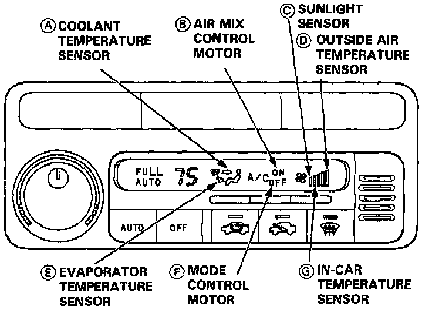
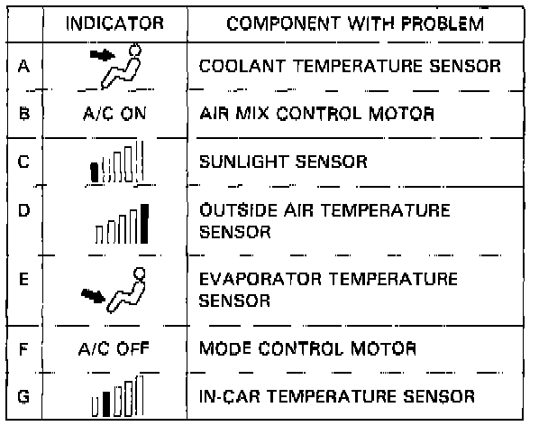
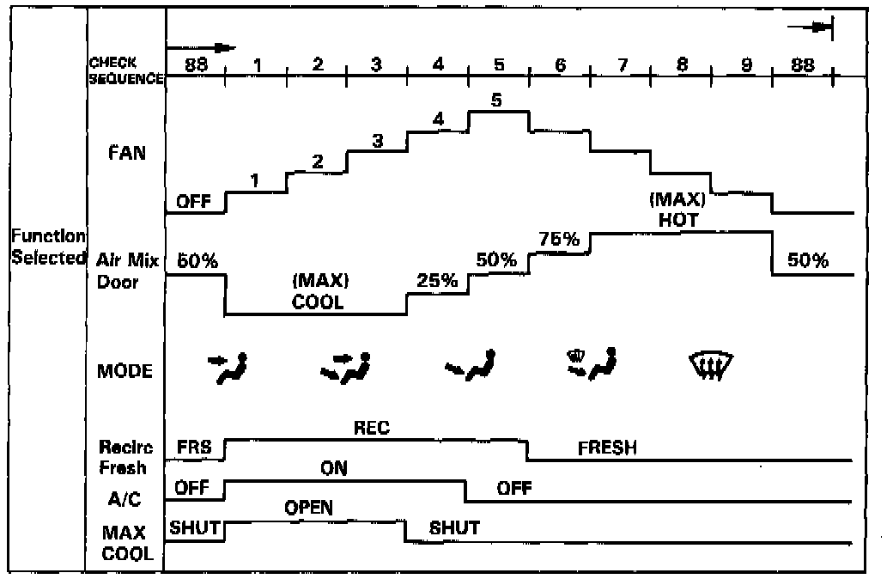

Self-Diagnostic Checks


SELF-DIAGNOSIS CIRCUIT CHECK
- The Automatic Climate Control System has a built-in self-diagnosis feature.
- To run it, turn the ignition switch ON and turn the FAN switch to AUTO position. Wait for at least one minute on each TEMP display US: 15.5°C (60°F) - 32°C (90°F), CANADA: 18°C (64°F) - 32°C (90°F). Then, push both the AUTO and OFF buttons on the control unit at the same time.
- Any problems in circuits "A" through "G" listed in the table will be indicated by the respective indicator coming on.
- The climate control unit does not memorize which self-diagnosis indicator lights come on. If you turn the ignition switch OFF, the indicator light memory will be lost.

FUNCTION SELECTION AND OPERATION CHECK
- This check will quickly and automatically select and operate all functions of the climate control system, in the combinations and sequence shown. It may help clarify a problem, or identify one that didn't show up when you ran the self-diagnosis circuit check.
- Turn the FAN switch to AUTO, then push in both the MODE and AUTO buttons and hold them in while you start the engine. The control unit will then automatically run the check in eight steps, one step every 5 seconds.
- To stop at one of those steps, push the MODE button; to continue, push it again for each step after that. Pushing the OFF button or turning the ignition OFF, will turn off the check.
- Check the temperature, volume, and source of the air flow, and compare it to what the chart shows it should be.